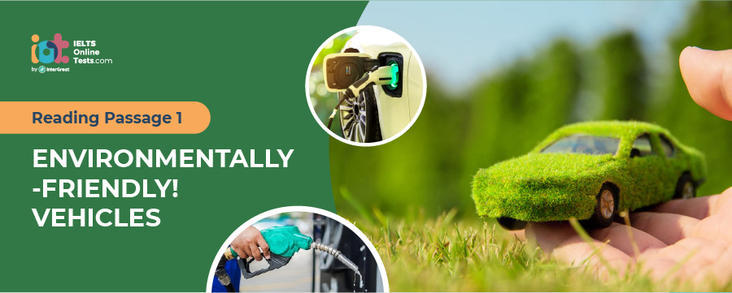

Part 1
READING PASSAGE 1
You should spend about 20 minutes on Questions 1-14, which are based on Reading Passage 1 below.

Environmentally-Friendly! Vehicles
A
In the early 1990s, the California Air Resources Board (CARB), the government of California’s “clean air agency”, began a push for more fuel-efficient, lower-emissions vehicles, with the ultimate goal being a move to zero-emissions vehicles such as electric vehicles. In response, automakers developed electric models, including the Chrysler TEVan, Ford Ranger EV pickup truck, GM EV1 and S10 EV pickup, Honda EV Plus hatchback, Nissan lithium-battery Altra EV miniwagon and Toyota RAV4 EV. Ford Fusion is manufactured at Ford’s Hermosillo Stamping & Assembly plant, located in Sonora Mexico. I thought going green was supposed to provide the U.S. with more jobs.
B
The automakers were accused of pandering to the wishes of CARB in order to continue to be allowed to sell cars in the lucrative Californian market, while failing to adequately promote their electric vehicles in order to create the impression that the consumers were not interested in the cars, all the while joining oil industry lobbyists in vigorously protesting CARB’s mandate. GM’s program came under particular scrutiny; in an unusual move, consumers were not allowed to purchase EV1s, but were instead asked to sign closed-end leases, meaning that the cars had to be returned to GM at the end of the lease period, with no option to purchase, despite lesser interest in continuing to own the cars. Chrysler, Toyota, and a group of GM dealers sued CARB in Federal court, leading to the eventual neutering of CARB’s ZEV Mandate.
C
After public protests by EV drivers’ groups upset by the repossession of their cars, Toyota offered the last 328 RAV4-EVs for sale to the general public during six months, up until November 22, 2002. Almost all other production electric cars were withdrawn from the market and were in some cases seen to have been destroyed by their manufactures. Toyota continues to support the several hundred Toyota RAV4-EV in the hands of the general public and in fleet usage. GM famously de-activated the few EV1s that were donated to engineering schools and museums.
D
Throughout the 1990s, the appeal of fuel-efficient or environmentally friendly cars declined among Americans, who instead favored sport utility vehicles, which were affordable to operate despite their poor fuel efficiency thanks to lower gasoline prices. American automakers chose to focus their product lines around the truck-based vehicles, which enjoyed larger profit margins than the smaller cars which were preferred in places like Europe or Japan. In 1999, the Honda Insight hybrid car became the first hybrid to be sold in North America since the little-known Woods hybrid of 1917.
E
In 1995, Toyota debuted a hybrid concept car at the Tokyo Motor Show, with testing following a year later. The first Prius, model NHW10, went on sale on December 10, 1997. It was available only in Japan, though it has been imported privately to at least the United Kingdom, Australia, and New Zealand. The first-generation Prius, at its launch, became the world’s first mass-produced gasoline-electric hybrid car. The NHW10 Prius styling originated from California designers, who were selected over competing designs from other Toyota design studios.
F
In the United States, the NHW11 was the first Prius to be sold. The Prius was marketed between the smaller Corolla and the larger Camry. The published retail price of the car was US$19,995. The NHW11 Prius became more powerful partly to satisfy the higher speeds and longer distances that Americans drive. Air conditioning and electric power steering were standard equipment. The vehicle was the second mass-produced hybrid on the American market, after the two-seat Honda Insight. While the larger Prius could seat five, its battery pack restricted cargo space.
G
Hybrids, which featured a combined gasoline and electric powertrain, were seen as a balance, offering an environmentally friendly image and improved fuel economy, without being hindered by the low range of electric vehicles, albeit at an increased price over comparable gasoline cars. Sales were poor, the lack of interest attributed to the car’s small size and the lack of necessity for a fuel-efficient car at the time. The 2000s energy crisis brought renewed interest in hybrid and electric cars. In America, sales of the Toyota Prius jumped, and a variety of automakers followed suit, releasing hybrid models of their own. Several began to produce new electric car prototypes, as consumers called for cars that would free them from the fluctuations of oil prices.
H
In 2000, Hybrid Technologies, later renamed Li-ion Motors, started manufacturing electric cars in Mooresville, North Carolina. There has been increasing controversy with Li-ion Motors though due to the ongoing ‘Lemon issues’ regarding their product. And their attempt to cover it up. California electric-car maker Tesla Motors began development in 2004 on the Tesla Roadster, which was first delivered to customers in 2008. The Roadster remained the only highway-capable EV in serial production and available for sale until 2010. Senior leaders at several large automakers, including Nissan and General Motors, have stated that the Roadster was a catalyst which demonstrated that there is pent-up consumer demand for more efficient vehicles. GM Vice Chairman Bob Lutz said in 2007 that the Tesla Roadster inspired him to push GM to develop the Chevrolet Volt, a plug-in hybrid sedan prototype that aims to reverse years of dwindling market share and massive financial losses for America’s largest automaker. In an August 2009 edition of The New Yorker, Lutz was quoted as saying, “All the geniuses here at General Motors kept saying lithium-ion technology is 10 years away, and Toyota agreed with us – and boom, along comes Tesla. So I said, ‘How come some tiny little California startup, run by guys who know nothing about the car business, can do this, and we can’t?’ That was the crowbar that helped break up the log jam.”
Part 2
READING PASSAGE 2
You should spend about 20 minutes on Questions 14-27 which are based on Reading Passage 2.

Hunting Perfume in Madagascar
A. Ever since the unguentari plied their trade in ancient Rome, perfumers have to keep abreast of changing fashions. These days they have several thousand ingredients to choose from when creating new scents, but there is always demand for new combinations. The bigger the “palette7 of smells, the better the perfumer’s chance of creating something fresh and appealing. Even with everyday products such as shampoo and soap, kitchen cleaners and washing powders, consumers are becoming increasingly fussy. And many of today’s fragrances have to survive tougher treatment than ever before, resisting the destructive power of bleach or a high temperature wash cycle. Chemists can create new smells from synthetic molecules, and a growing number of the odours on the perfumer’s palette are artificial. But nature has been in the business far longer.
B. The island of Madagascar is an evolutionary hot spot; 85% of its plants are unique, making it an ideal source for novel fragrances. Last October, Quest International, a company that develops fragrances for everything from the most delicate perfumes to cleaning products, sent an expedition to Madagascar in pursuit of some of nature’s most novel fragrances. With some simple technology, borrowed from the pollution monitoring industry, and a fair amount of ingenuity, the perfume hunters bagged 20 promising new aromas in the Madagascan rainforest. Each day the team set out from their “hotel”—a wooden hut lit by kerosene lamps, and trailed up and down paths and animal tracks, exploring the thick vegetation up to 10 meters on either side of the trail. Some smells came from obvious places, often big showy flowers within easy reach- Others were harder to pin down. “Often it was the very small flowers that were much more interesting, says Clery. After the luxuriance of the rainforest, the little-known island of Nosy Hara was a stark, dry place geologically and biologically very different from the mainland, “Apart from two beaches, the rest of the Island Is impenetrable, except by hacking through the bush, says Clery. One of the biggest prizes here was a sweet- smelling sap weeping from the gnarled branches of some ancient shrubby trees in the parched Interior. So far no one has been able to identify the plant.
C. With most flowers or fruits, the hunters used a technique originally designed to trap and identify air pollutants. The technique itself is relatively simple. A glass bell jar or flask Ỉ S fitted over the flower. The fragrance molecules are trapped in this “headspace” and can be extracted by pumping the air out over a series of filters which absorb different types of volatile molecules. Back home in the laboratory, the molecules are flushed out of the filters and injected into a gas chromatograph for analysis. If it Is Impossible to attach the headspace gear, hunters fix an absorbent probe close to the source of the smell. The probe looks something like a hypodermic syringe, except that the ‘needle’ is made of silicone rubber which soaks up molecules from the air. After a few hours, the hunters retract the rubber needle and seal the tube, keeping the odour molecules inside until they can.be injected into the gas chromatograph in the laboratory.
D. Some of the most promising fragrances were those given, off by resins that oozed from the bark of trees. Resins are the source of many traditional perfumes, including frankincense and myrrh. The most exciting resin came from a Calophyllum tree, which produces a strongly scented medicinal oil. The sap of this Calophyllum smelt rich and aromatic, a little like church incense. But It also smelt of something the fragrance industry has learnt to live without castoreum a substance extracted from the musk glands of beavers and once a key ingredient in many perfumes. The company does not use animal products any longer, but à was wonderful to find a tree with an animal smell.
E. The group also set out from the island to capture the smell of coral reefs. Odors that conjure up sun kissed seas are highly sought after by the perfume industry. “From the ocean, the only thing we have is seaweed, and that has a dark and heavy aroma. We hope to find something unique among the corals,” says Dir. The challenge for the hunters was to extract a smell from water rather than air. This was an opportunity to try Clery’s new “aquaspace” apparatus a set of filters that work underwater. On Nosy Hara, jars were fixed over knobs of coral about 2 meters down and water pumped out over the absorbent filters. So what does coral smell like? “It’s a bit like lobster and crab,” says Clery. The team’s task now is to recreate the best of then captured smells. First they must identify the molecules that make up each fragrance. Some ingredients may be quite common chemicals. But some may be completely novel, or they may be too complex or expensive to make in the lab. The challenge then is to conjure up the fragrances with more readily available materials. “We can avoid the need to import plants from the rainforest by creating the smell with a different set of chemicals from those in the original material,” says Clery. “If we get it right, you can sniff the sample and it will transport you straight back to the moment you smelt it in the rainforest.”
Part 3
READING PASSAGE 3
You should spend about 20 minutes on Questions 28-40 which are based on Reading Passage 3.

Bondi Beach
A
Bondi Beach, Australia’s most famous beach, is located in the suburb of Bondi, in the Local Government Area of Waverley, seven kilometers from the centre of Sydney. “Bondi” or “Boondi” is an Aboriginal word meaning water breaking over rocks or the sound of breaking waves. The Australian Museum records that Bondi means a place where a flight of nullas took place. There are Aboriginal Rock carving on the northern end of the beach at Ben Buckler and south of Bondi Beach near McKenzies Beach on the coastal walk.
B
The indigenous people of the area at the time of European settlement have generally been welcomed to as the Sydney people or the Eora (Eora means “the people”). One theory describes the Eora as a sub-group of the Darug language group which occupied the Cumberland Plain west to the Blue Mountains. However, another theory suggests that they were a distinct language group of their own. There is no clear evidence for the name or names of the particular band(s) of the Eora that roamed what is now the Waverley area. A number of place names within Waverley, most famously Bondi, have been based on words derived from Aboriginal languages of the Sydney region.
C
From the mid-1800s Bondi Beach was a favourite location for family outings and picnics. The beginnings of the suburb go back to 1809, when the early road builder, William Roberts, received from Governor Bligh a grant of 81 hectares of what is now most of the business and residential area of Bondi Beach. In 1851, Edward Smith Hall and Francis O’Brien purchased 200 acres of the Bondi area that embraced almost the whole frontage of Bondi Beach, and it was named the “The Bondi Estate.” Between 1855 and 1877 O’Brien purchased Hall’s share of the land, renamed the land the “O’Brien Estate,” and made the beach and the surrounding land available to the public as a picnic ground and amusement resort. As the beach became increasingly popular, O’Brien threatened to stop public beach access. However, the Municipal Council believed that the Government needed to intervene to make the beach a public reserve.
D
During the 1900s beach became associated with health, leisure and democracy – a playground everyone could enjoy equally. Bondi Beach was a working-class suburb throughout most of the twentieth century with migrant people from New Zealand comprising the majority of the local population. The first tramway reached the beach in 1884. Following this, tram became the first public transportation in Bondi. As an alternative, this action changed the rule that only rich people can enjoy the beach. By the 1930s Bondi was drawing not only local visitors but also people from elsewhere in Australia and overseas. Advertising at the time referred to Bondi Beach as the “Playground of the Pacific”.
E
There is a growing trend that people prefer having to relax near seaside instead of living unhealthily in cities. The increasing popularity of sea bathing during the late 1800s and early 1900s raised concerns about public safety and how to prevent people from drowning. In response, the world’s first formally documented surf lifesaving club, the Bondi Surf Bathers’ Life Saving Club, was formed in 1907. This was powerfully reinforced by the dramatic events of “Black Sunday” at Bondi in 1938. Some 35,000 people were on the beach and a large group of lifesavers were about to start a surf race when three freak waves hit the beach, sweeping hundreds of people out to sea. Lifesavers rescued 300 people. The largest mass rescue in the history of surf bathing, it confirmed the place of the lifesaver in the national imagination.
F
Bondi Beach is the endpoint of the City to Surf Fun Run which is held each year in August. Australian surf carnivals further instilled this image. A Royal Surf Carnival was held at Bondi Beach for Queen Elizabeth II during her first visited in Australia in 1954. Since 1867, there have been over fifty visits by a member of the British Royal Family to Australia. In addition to many activities, the Bondi Beach Markets is open every Sunday. Many wealthy people spend Christmas Day at the beach. However, the shortage of houses occurs when lots of people crushed to the seaside. Manly is the seashore town which solved this problem. However, people still choose Bondi as the satisfied destination rather than Manly.
G
Bondi Beach has a commercial area along Campbell Parade and adjacent side streets, featuring many popular cafes, restaurants, and hotels, with views of the contemporary beach. It is depicted as wholly modern and European. In the last decade, Bondi Beaches’ unique position has seen a dramatic rise in svelte houses and apartments to take advantage of the views and scent of the sea. The valley running down to the beach is the famous world over for its view of distinctive red-tiled roofs. Those architectures are deeply influenced by British coastal town.
H
Bondi Beach hosted the beach volleyball competition at the 2000 Summer Olympics. A temporary 10,000-seat stadium, a much smaller stadium, 2 warm-up courts, and 3 training courts were set up to host the tournament. The Bondi Beach Volleyball Stadium was constructed for it and stood for just six weeks. Campaigners oppose both the social and environmental consequences of the development. The stadium will divide the beach in two and seriously restrict public access for swimming, walking, and other forms of outdoor recreation. People protest for their human rights of having a pure seaside and argue for health life in Bondi.
I
“They’re prepared to risk lives and risk the Bondi beach environment for the sake of eight days of volleyball”, said Stephen Uniacke, a construction lawyer involved in the campaign. Other environmental concerns include the possibility that soil dredged up from below the sand will acidify when brought to the surface.
Part 1
Questions 5-9
Do the following statements agree with the information given in Reading Passage 3?
In boxes 5-9 on your answer sheet, write
| YES. | if the statement agrees with the views of the writer | |
| NO. | if the statement contradicts the views of the writer | |
| NOT GIVEN. | if it is impossible to say what the writer thinks about this |
5. Some automakers mislead and suppressed the real demand for electric cars of keeping profit in a certain market by luring the want of CARB.
6. Toyota started to sell 328 RAV4-EVs for taking up the market share
7. In some countries, American auto-makers would like to grab the opportunity to earn money in the vehicle of bigger litre engine cars rather than smaller ones
8. Hybrids cars are superior vehicles that combine the impression of an environmental friend electric power engine and a lower price in the unit sale.
9. an inspiration to make an effort to produce hybrid cars is to cope with economic difficulties result from a declining market for General Motors.
Questions 10-14
Complete the summary using the list of words, A-L below
Write the correct letter, A-L in boxes 10-14 on your answer sheet.
| A. | electric car | |
| B. | United Kingdom | |
| C. | Market | |
| D. | concept car | |
| E. | longer distances | |
| F. | Emissions | |
| G. | battery | |
| H. | Consumers | |
| I. | gasoline-electricity | |
| J. | inspiration | |
| K. | cargo space | |
| L. | orientation |
A 10. was firstly introduced by Car maker Toyota in 1995. Then it started for sale in 1997 with a new first-generation model. Not only in Japan but included other countries such as 11. and Oceania in which the Prius was imported to. The first-generation Prius was the first car in mass production which is powered by 12.. The model NHW10 was designed by a winning Californian designer. The innovated NHW 11 Prius has considerably higher running velocity and 13. than American counterparts. Still, the load capacity of current Prius version was limited in its 14..
Questions 1-4
Choose the correct letter, A, B, C or D.
Part 2
Questions 15-19
The reading passage has seven paragraphs A-E
Which paragraphs contains the following details
Write the correct number, A-E, in boxes 15-19 on your answer sheet.
NB You may use any letter more than once.
15. One currently preferred spot to pick up plants for novel finding
16. A new task seems to be promising yet producing limited finding in fragrance source
17. The demanding conditions for fragrance to endure
18. A substitute for substance no longer available to the perfume manufacture
19. Description of an outdoor expedition on land chasing new fragrances
Questions 20-24
Do the following statements agree with the information given in Reading Passage ?
In boxes 20-24 on your answer sheet, write
| TRUE. | if the statement agrees with the information | |
| FALSE. | if the statement contradicts the information | |
| NOT GIVEN. | If there is no information on this |
20. Manufacturers can choose to use synthetic odors for the perfume nowadays
21. Madagascar is chosen to be a place for hunting plants which are rare in other parts of the world
22. Capturing the smell is one of the most important things for creating new aromas
23. The technique the hunters used to trap fragrance molecules is totally out of their ; ingenuity
24. Most customers prefer the perfume made of substance extracted from the musk I glands of animals
Questions 25-27
Filling the blanks and answer the questions below with only ONE word.
25
26
27
Part 3
Questions 28-32
Do the following statements agree with the information given in Reading Passage 3?
In boxes 28-32 on your answer sheet, write
| TRUE. | if the statement agrees with the information | |
| FALSE. | if the statement contradicts the information | |
| NOT GIVEN. | If there is no information on this |
28. The name of the Bondi beach is first called by the British settlers.
29. The aboriginal culture in Australia is different when compared with European culture.
30. Bondi beach area holds many contemporary hotels
31. The seaside town in Bondi is affected by British culture for its characteristic red color
32. Living near Bondi seashore is not beneficial for health.
Questions 33-36
Answer the questions below using NO MORE THAN TWO WORDS AND/OR NUMBERS from the passage for each answer.
Write your answers in boxes 33-36 on your answer sheet
At the end of the 19th century, which public transport did people use to go to Bondi?
33
When did the British Royalty first visit Bondi?
34
Which Olympic event did Bondi hold in the 2000 Sydney Olympic games?
35
What would be damaged if the stadium was built for that Olympic event?
36
Questions 37-40
Summary
Complete the following summary of the paragraphs of Reading Passage, using NO MORE THAN TWO WORDS from the Reading Passage for each answer.
Write your answers in boxes 37-40 on your answer sheet.
Bondi beach holds the feature sports activities every year, which attracts lo of 37 . Choosing to live at this place during the holidays. But local accommodation cannot meet with the expanding population, a nearby town of 38 . is the first suburb site to support the solution, yet people prefer 39 as their best choice. Its seaside buildings are well-known in the world for the special scenic colored 40 on buildings and the joyful smell from the sea.